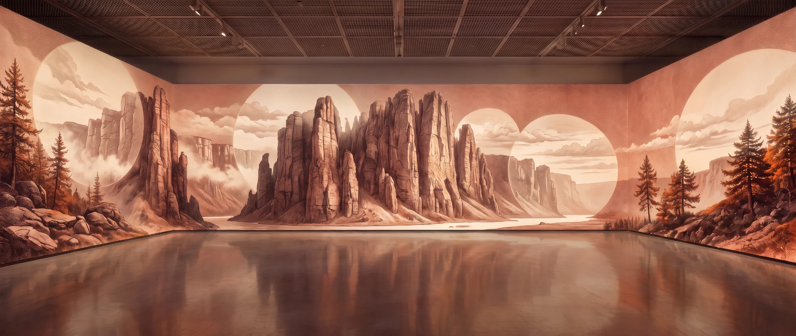
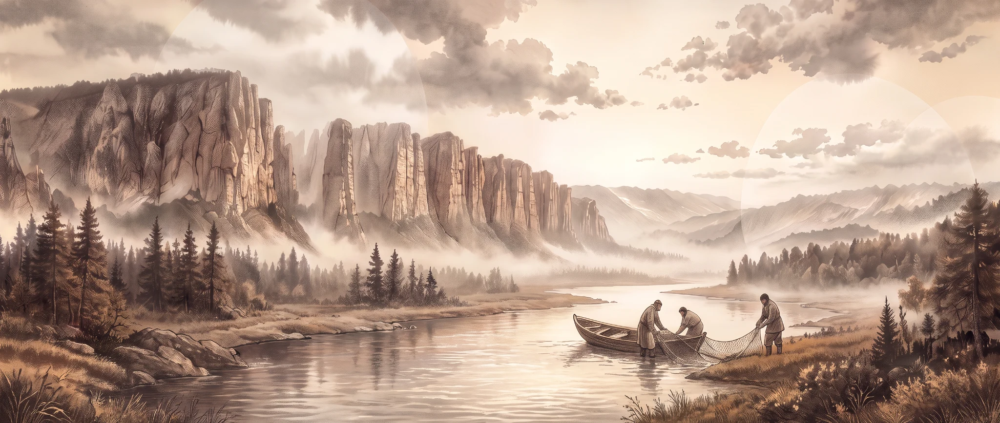
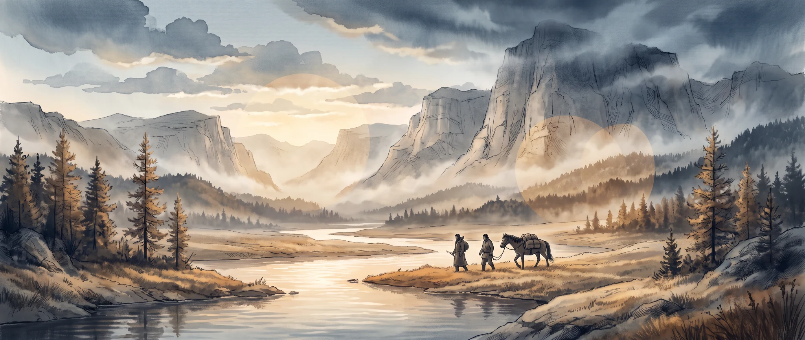
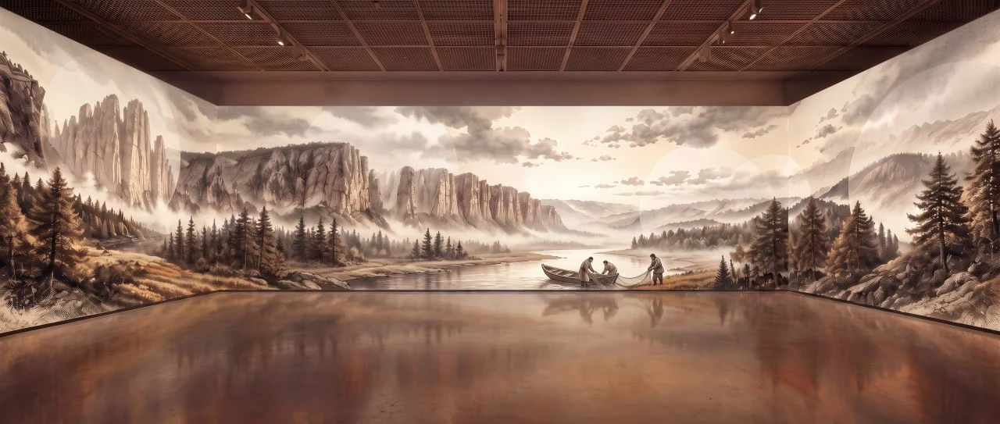
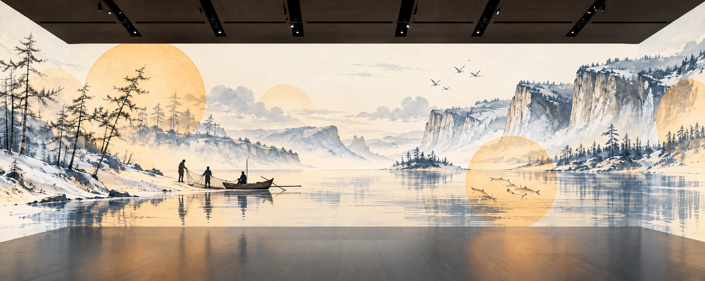
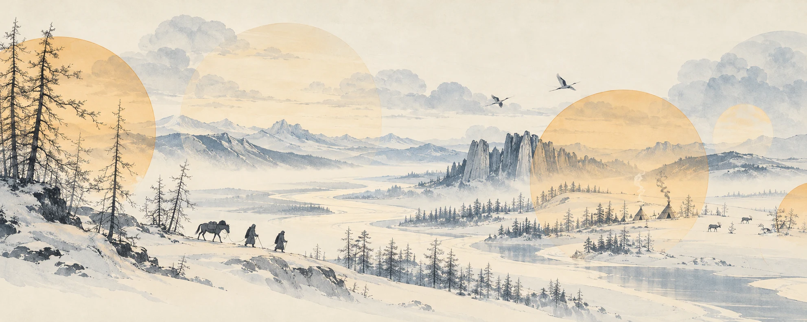
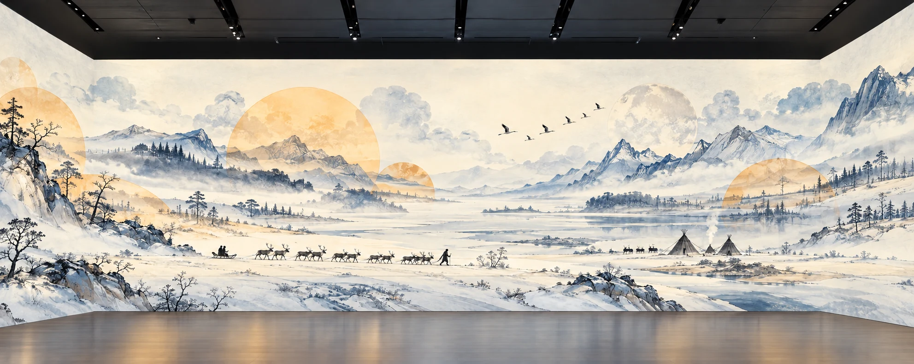
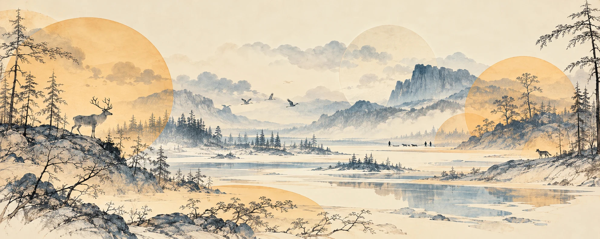
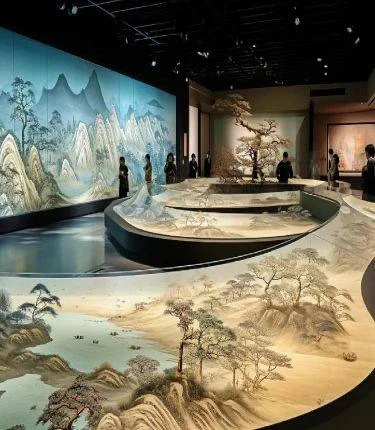

0:00–0:10
Пробуждение пространства
Из дымки проявляются река, лес и горы. Медленное движение вперёд.
Две части по полторы минуты. Сначала природа откликается на акапельное исполнение и удары бубна. Затем под фонограмму знакомые герои и сюжеты возвращаются в анимационном лупе.






ⓘ Демо-визуализации для согласования сценарного хода, стилистики и композиционного решения. Финальные арты создаются после согласования. ◷ Рабочая разбивка. Привязка к исполнению и фонограмме уточняется.
Якутия показывается как земля, которая вырастила человека и продолжает давать ему силу. Эта мысль раскрывается через пространство, природное изобилие и повседневную жизнь: течение реки, движение стада, работу рыбаков, сбор ягод, дорогу домой.
Основой номера становится обращение к духу охоты и удачи. Культурный ориентир – представления о Баай Байанае, покровителе охоты. Видеоряд развивает тему через отклик природы на голос и ритм бубна. Это художественная трактовка; конкретные обрядовые действия относятся к постановке исполнителей.
Панорамы объединяют долину Лены со скальными берегами, лиственничную тайгу, луга, озёра и северную лесотундру. Это художественное путешествие по разным местам, а не географически непрерывный маршрут. Крупные планы хвои, ягод и рук чередуются с далёкими пространствами.
| Материал | Визуальное применение |
|---|---|
| Лена и скальные берега | Вода, вертикальный ритм камня, отражения, воздушные планы. |
| Лиственница | Тонкие ветви, пучки хвои, сезонные изменения; зимой хвоя опадает. |
| Брусника и черника | Низкий растительный ярус, ягоды, крупные планы листьев. |
| Кедровый стланик | Низкие ветви под снегом. |
| Северные олени | Стадо, взрослая особь рядом с оленёнком. |
| Бурый медведь | Самостоятельный обитатель леса, сцена кормления ягодами. |
| Стерхи | Белые силуэты, чёрные маховые перья, красный участок лица. |
| Рыба | Подводный план; для крупного плана – силуэт хариуса. |
Люди показаны через занятия: рыбалку, охоту, сбор ягод, уход за животными и зимнюю дорогу. Костюмы, упряжь и жильё уточняются по региональным источникам с учётом разных традиций народов Якутии.
Тонкий рисунок, близкий к каллиграфии, прозрачные цветовые слои и силуэты. Объём – через перекрытие планов, свет, тени и дымку. Палитра: слоновая кость, холодные серо-голубые, сдержанная охра. Цветовые акценты – ягоды, тёплое окно и хвоя.
Вытянутый фронтальный экран продолжается на боковые. Границы экранов не рисуются. Контент остаётся строго внутри экранных поверхностей, не переходит на потолок или пол. Сюжетные окна – крупные низкие полукруги, верх панорамы свободен. Их персонажи сохраняют ту же тонкую графику, что и фон, без мультяшной прорисовки.
Исследовательские фотографии – справочные материалы о природе, не графический образец для финальных артов.
Из светлой дымки проступают река, горы и лес. Медленный пролёт раскрывает глубину пейзажа. Удары бубна вызывают короткие отклики: волны от солнечного диска либо смещения линий рисунка. На реке появляются рыбаки, на тропе охотник с собакой, на другом берегу медведь. Затем сбор ягод, луг с домами, северное стадо и зимняя дорога.
В основных панорамах сюжетных кругов нет. Круг появляется лишь как кратковременный импульс на ударе.
Солнечный диск и волны. Охристый диск и широкие прозрачные полосы расходятся на удар и растворяются. Вибрация контуров. Смещённые линии скал, ветвей и хвои кратко дрожат и возвращаются на место; возможен мягкий глитч по краям штрихов. Оба эффекта остаются в пределах экранов.
Камера почти неподвижна. Три широкие панорамы удерживаются примерно по 30 секунд: весенняя река, летняя долина, осень и зима. Поверх них возникают крупные низкие круги и полукруги с отдельными сюжетами. Рыбаки вытягивают сеть, рыба проходит под водой, собиратели берут ягоды, медведь кормится, охотник идёт домой, стадо движется в открытом пространстве.
Одновременно присутствует от одного до четырёх окон, между группами допустимы паузы. Истории пересекаются по времени, но имеют причинные связи: вода – рыба – рыбаки; растения – ягоды – сбор; лесная дорога – охотник – дом. Небольших окон-пузырей под потолком нет.
Последними остаются тёплое окно дома и растение под снегом. Они растворяются. Дымка возвращает весеннюю реку. Камера, яркость и движение воды совпадают с началом лупа. В первые и последние секунды сюжетных окон нет.
Номер строится как обращение к духу охоты и удачи. В первой акапельной части камера движется по рекам, горам, тайге и северным просторам, открывая жизнь людей и животных. Бубен вызывает ответ пейзажа – волны солнечного диска или вибрацию рисунка. Во второй части под фонограмму знакомые герои продолжают свои истории внутри крупных низких сюжетных окон на трёх панорамах. Смена сезонов приводит обратно к весенней реке начала: видео замыкается в бесшовный луп.
Один непрерывный пролёт. Девять демонстрационных сцен, по десять секунд каждая. На удары бубна – кратковременные графические импульсы.
Из дымки проявляются река, лес и горы. Медленное движение вперёд.
Скальные берега, широкая вода, маленькая лодка вдали.
Приближение к берегу: лодка, две фигуры и сеть.
Крупная ветка лиственницы; за ней охотник с собакой на тропе.
Охотник продолжает путь; медведь на удалённом участке другого берега.
Листья и ягоды крупно; взрослый и ребёнок с корзиной.
Луг у озера, дома и лошади вдали, спокойное движение травы.

Олениха с оленёнком, стадо и пастух; птицы над открытым ландшафтом.

Упряжка пересекает снежную долину. Замедление камеры, тёплое жильё вдали.

Точный сценарный тайминг слева, композиционные демо справа. Примеры иллюстрируют тип расположения и атмосферу, а не каждое шестисекундное состояние окон. Для финальных кадров используются восстановленные материалы второй части.
Первые две секунды чистая панорама. Затем появляется ветка лиственницы с раскрывающейся хвоей.
Ветка остаётся. Добавляются рыбаки с сетью и рыба под водой.
Ветка исчезает. Остаются рыбаки и рыба; появляются птицы и олениха с оленёнком.
Подводное окно исчезает. Рыбаки, птицы и олени продолжаются; появляется медведь на поляне.
Рыбаки и птицы уходят. Олени и медведь связывают переход к лету.
Медведь исчезает. Олени остаются; появляется крупный план брусники.
Олени уходят. Ягоды остаются; появляются собиратели и освещённая хвоя.
Продолжаются ягоды, собиратели и хвоя. Медведь кормится на другой поляне.
Ягоды исчезают. Собиратели наполняют корзину; хвоя золотится; медведь уходит.
Хвоя и медведь исчезают. Собиратели собираются домой; появляется охотник с собакой.
Собиратели и охотник идут домой. Добавляется дом с тёплым окном.
Собиратели уходят. Охотник и дом остаются; появляются стланик под снегом и стадо.
Охотник растворяется. Дом, стланик и стадо остаются; появляется упряжка.
Стадо и упряжка уходят. Остаются дом и растение под снегом.
К 1:26 оба окна растворяются. Дымка возвращает речную панораму начала. Совпадают камера, свет и движение воды.